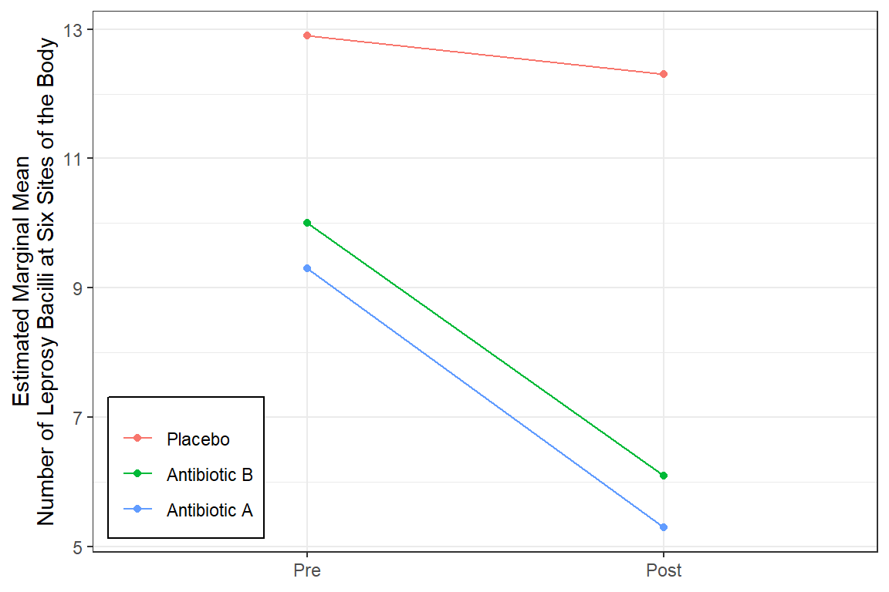
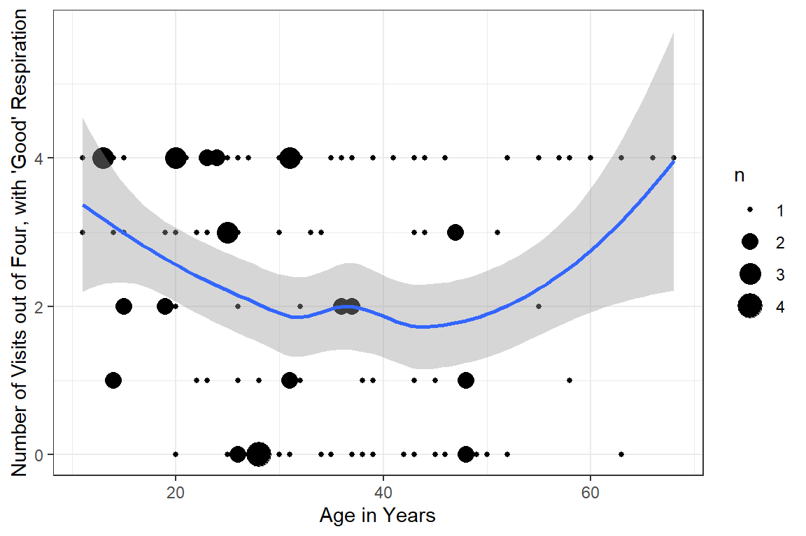
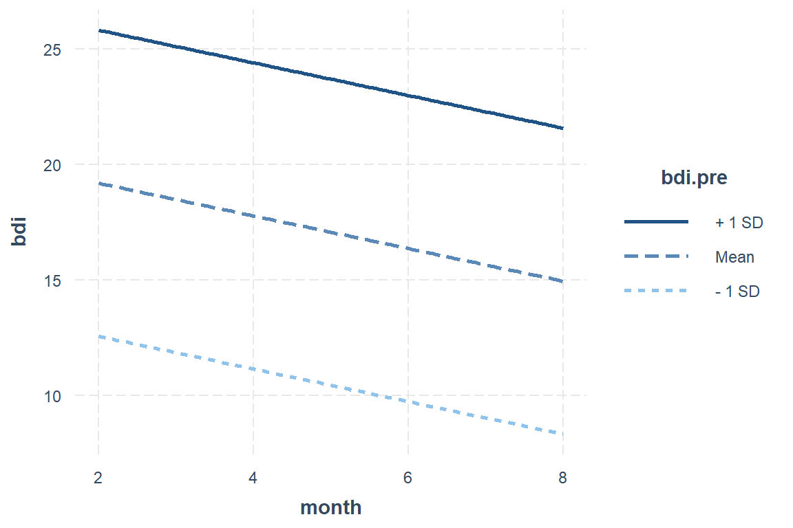
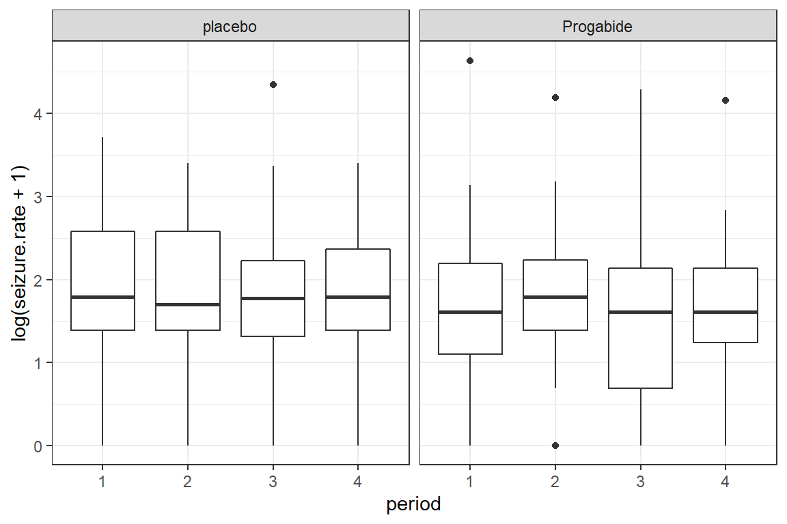
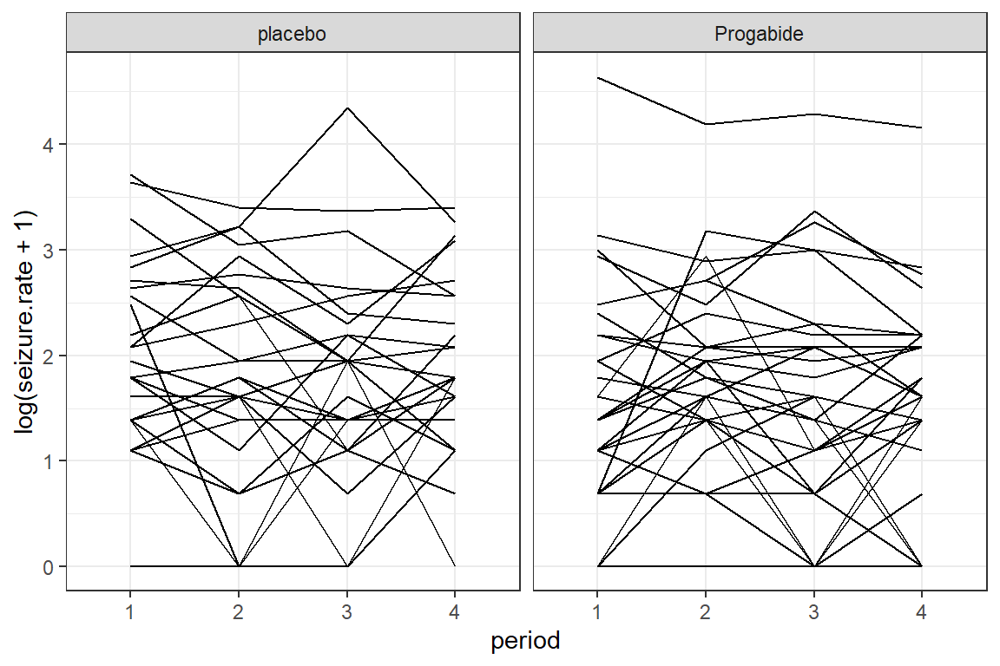

15 GEE, Count Outcome: Epilepsy
15.1 Packages
15.1.1 CRAN
library(tidyverse) # all things tidy
library(pander) # nice looking genderal tabulations
library(furniture) # nice table1() descriptives
library(texreg) # Convert Regression Output to LaTeX or HTML Tables
library(psych) # contains some useful functions, like headTail
library(lme4) # Linear, generalized linear, & nonlinear mixed models
library(corrplot) # Vizualize correlation matrix
library(gee) # Genderalized Estimation Equation Solver
library(geepack) # Genderalized Estimation Equation Package
library(MuMIn) # Multi-Model Inference (caluclate QIC)
library(HSAUR) # package with the dataset15.2 Prepare and get to know the dataset
This data set is in the HSAUR package.
In this clinical trial, 59 patients suffering from epilepsy were randomized to groups receiving either the anti-epileptic drug “Progabide”" or a placebo in addition to standard chemotherapy. The numbers of seizures suffered in each of four, two-week periods were recorded for each patient along with a baseline seizure count for the 8 weeks prior to being randomized to treatment and age. The main question of interest is whether taking progabide reduced the number of epileptic seizures compared with placebo.
Indicators
subjectthe patient ID, a factor with levels 1 to 59
periodtreatment period, an ordered factor with levels 1 to 4
Outcome or dependent variable
+
seizure.ratethe number of seizures (2-weeks)Main predictor or independent variable of interest
treatmentthe treatment group, a factor with levels placebo and Progabide
Time-invariant Covariates
agethe age of the patient
basethe number of seizures before the trial (8 weeks)
15.2.1 Read in the data
Problem: The outcome (seizure.rate) were counts over a TWO-week period and we would like to interpret the results in terms of effects on the WEEKLY rate.
- If we divide the values by TWO to get weekly rates, the outcome might be a decimal number
- The Poisson distribution may only be used for whole numbers (not deciamls)
Solution: We need to include an offset term in the model that indicates the LOG DURATION of each period.
- Every observation period is exactly 2 weeks in this experiment
- Create a variable in the original dataset that is equal to the LOG DURATION (
per = log(2)) - To the formula for the
glm()orgee(), add: ` + offset(per)`
15.2.2 Long Format
data_long <- epilepsy %>%
dplyr::select(subject, age, treatment, base,
period, seizure.rate) %>%
dplyr::mutate(per = log(2)) %>% # new variable to use with the offset
dplyr::mutate(base_wk = base/8)
str(data_long)'data.frame': 236 obs. of 8 variables:
$ subject : Factor w/ 59 levels "1","2","3","4",..: 1 1 1 1 2 2 2 2 3 3 ...
$ age : int 31 31 31 31 30 30 30 30 25 25 ...
$ treatment : Factor w/ 2 levels "placebo","Progabide": 1 1 1 1 1 1 1 1 1 1 ...
$ base : int 11 11 11 11 11 11 11 11 6 6 ...
$ period : Ord.factor w/ 4 levels "1"<"2"<"3"<"4": 1 2 3 4 1 2 3 4 1 2 ...
$ seizure.rate: int 5 3 3 3 3 5 3 3 2 4 ...
$ per : num 0.693 0.693 0.693 0.693 0.693 ...
$ base_wk : num 1.38 1.38 1.38 1.38 1.38 ... subject age treatment base period seizure.rate per base_wk
1 1 31 placebo 11 1 5 0.69 1.38
2 1 31 placebo 11 2 3 0.69 1.38
3 1 31 placebo 11 3 3 0.69 1.38
4 1 31 placebo 11 4 3 0.69 1.38
5 2 30 placebo 11 1 3 0.69 1.38
6 2 30 placebo 11 2 5 0.69 1.38
7 2 30 placebo 11 3 3 0.69 1.38
8 2 30 placebo 11 4 3 0.69 1.38
9 3 25 placebo 6 1 2 0.69 0.75
10 3 25 placebo 6 2 4 0.69 0.75
... <NA> ... <NA> ... <NA> ... ... ...
231 58 36 Progabide 13 3 0 0.69 1.62
232 58 36 Progabide 13 4 0 0.69 1.62
233 59 37 Progabide 12 1 1 0.69 1.5
234 59 37 Progabide 12 2 4 0.69 1.5
235 59 37 Progabide 12 3 3 0.69 1.5
236 59 37 Progabide 12 4 2 0.69 1.515.2.3 Wide Format
data_wide <- data_long %>%
tidyr::spread(key = period,
value = seizure.rate,
sep = "_") %>%
dplyr::arrange(subject)
str(data_wide)'data.frame': 59 obs. of 10 variables:
$ subject : Factor w/ 59 levels "1","2","3","4",..: 1 2 3 4 5 6 7 8 9 10 ...
$ age : int 31 30 25 36 22 29 31 42 37 28 ...
$ treatment: Factor w/ 2 levels "placebo","Progabide": 1 1 1 1 1 1 1 1 1 1 ...
$ base : int 11 11 6 8 66 27 12 52 23 10 ...
$ per : num 0.693 0.693 0.693 0.693 0.693 ...
$ base_wk : num 1.38 1.38 0.75 1 8.25 ...
$ period_1 : int 5 3 2 4 7 5 6 40 5 14 ...
$ period_2 : int 3 5 4 4 18 2 4 20 6 13 ...
$ period_3 : int 3 3 0 1 9 8 0 23 6 6 ...
$ period_4 : int 3 3 5 4 21 7 2 12 5 0 ... subject age treatment base per base_wk period_1 period_2 period_3 period_4
1 1 31 placebo 11 0.69 1.38 5 3 3 3
2 2 30 placebo 11 0.69 1.38 3 5 3 3
3 3 25 placebo 6 0.69 0.75 2 4 0 5
4 4 36 placebo 8 0.69 1 4 4 1 4
... <NA> ... <NA> ... ... ... ... ... ... ...
56 56 26 Progabide 22 0.69 2.75 1 23 19 8
57 57 21 Progabide 25 0.69 3.12 2 3 0 1
58 58 36 Progabide 13 0.69 1.62 0 0 0 0
59 59 37 Progabide 12 0.69 1.5 1 4 3 215.3 Exploratory Data Analysis
15.3.1 Summarize
15.3.1.1 Demographics and Baseline
data_wide %>%
furniture::table1(age, base, base_wk,
splitby = ~ treatment,
test = TRUE,
type = "full",
output = "markdown")| placebo | Progabide | Test | P-Value | |
|---|---|---|---|---|
| n = 28 | n = 31 | |||
| age | T-Test: 0.76 | 0.449 | ||
| 29.0 (6.0) | 27.7 (6.6) | |||
| base | T-Test: -0.12 | 0.907 | ||
| 30.8 (26.1) | 31.6 (28.0) | |||
| base_wk | T-Test: -0.12 | 0.907 | ||
| 3.8 (3.3) | 4.0 (3.5) |
15.3.1.2 Outcome Across Time
Note: The Poisson distribution specifies that the MEAN = VARIANCE
In this dataset, the variance is much larger than the mean, at all time points for both groups. This is evidence of overdispersion and suggest the scale parameter should be greater than one.
data_long %>%
dplyr::group_by(treatment, period) %>%
dplyr::summarise(N = n(),
M = mean(seizure.rate),
VAR = var(seizure.rate),
SD = sd(seizure.rate)) %>%
pander::pander()| treatment | period | N | M | VAR | SD |
|---|---|---|---|---|---|
| placebo | 1 | 28 | 9.4 | 103 | 10.1 |
| placebo | 2 | 28 | 8.3 | 67 | 8.2 |
| placebo | 3 | 28 | 8.8 | 215 | 14.7 |
| placebo | 4 | 28 | 8.0 | 58 | 7.6 |
| Progabide | 1 | 31 | 8.6 | 333 | 18.2 |
| Progabide | 2 | 31 | 8.4 | 141 | 11.9 |
| Progabide | 3 | 31 | 8.1 | 193 | 13.9 |
| Progabide | 4 | 31 | 6.7 | 127 | 11.3 |
15.3.1.3 Correlation Across Time
Raw Scale
data_long %>%
dplyr::select(subject, period, seizure.rate ) %>%
tidyr::spread(key = period,
value = seizure.rate ) %>%
dplyr::select(-subject) %>%
cor() %>%
corrplot::corrplot.mixed()
Log Scale
data_long %>%
dplyr::mutate(rate_wk = log(seizure.rate + 1)) %>%
dplyr::select(subject, period, rate_wk) %>%
tidyr::spread(key = period,
value = rate_wk) %>%
dplyr::select(-subject) %>%
cor() %>%
corrplot::corrplot.mixed()
15.3.2 Visualize
15.3.2.1 Oucome on the Raw Scale
There appear to be quite a few extreme values or outliers, particularly for the Progabide group during period one.
Since the outcome is truely a COUNT, we will model it with a Poisson distribution combined with a LOG link.
data_long %>%
ggplot(aes(x = period,
y = seizure.rate)) +
geom_boxplot() +
theme_bw() +
facet_grid(.~ treatment)
To investigate possible outliers, we should transform the outcome with the log function first.
Note: Since some participants reported no seizures during a two week period and the
log(0)is unndefinded, we must add some amount to the values before transforming. Here we have chosen to add the value of \(1\).
data_long %>%
ggplot(aes(x = period,
y = log(seizure.rate + 1))) +
geom_boxplot() +
theme_bw() +
facet_grid(.~ treatment)
data_long %>%
ggplot(aes(x = period,
y = log(seizure.rate + 1))) +
geom_line(aes(group = subject)) +
theme_bw() +
facet_grid(.~ treatment)
data_long %>%
ggplot(aes(x = period,
y = log(seizure.rate + 1))) +
geom_smooth(aes(group = subject),
method = "lm",
se = FALSE) +
geom_smooth(aes(group = 1),
color = "red",
size = 1.5,
method = "lm",
se = FALSE) +
theme_bw() +
facet_grid(.~ treatment)
15.4 Poisson Regression (GLM)
fit_glm <- glm(seizure.rate ~ base + age + treatment + offset(per),
data = data_long,
family = poisson(link = "log"))
summary(fit_glm)
Call:
glm(formula = seizure.rate ~ base + age + treatment + offset(per),
family = poisson(link = "log"), data = data_long)
Deviance Residuals:
Min 1Q Median 3Q Max
-4.436 -1.403 -0.503 0.484 12.322
Coefficients:
Estimate Std. Error z value Pr(>|z|)
(Intercept) -0.130616 0.135619 -0.96 0.3355
base 0.022652 0.000509 44.48 < 2e-16 ***
age 0.022740 0.004024 5.65 1.6e-08 ***
treatmentProgabide -0.152701 0.047805 -3.19 0.0014 **
---
Signif. codes: 0 '***' 0.001 '**' 0.01 '*' 0.05 '.' 0.1 ' ' 1
(Dispersion parameter for poisson family taken to be 1)
Null deviance: 2521.75 on 235 degrees of freedom
Residual deviance: 958.46 on 232 degrees of freedom
AIC: 1732
Number of Fisher Scoring iterations: 515.5 Generalized Estimating Equations (GEE)
15.5.1 Match Poisson Regresssion (GLM)
- correlation structure:
independence - scale parameter = \(1\)
fit_gee_ind_s1 <- gee::gee(seizure.rate ~ base + age + treatment + offset(per),
data = data_long,
family = poisson(link = "log"),
id = subject,
corstr = "independence",
scale.fix = TRUE,
scale.value = 1) (Intercept) base age treatmentProgabide
-0.13062 0.02265 0.02274 -0.15270
GEE: GENERALIZED LINEAR MODELS FOR DEPENDENT DATA
gee S-function, version 4.13 modified 98/01/27 (1998)
Model:
Link: Logarithm
Variance to Mean Relation: Poisson
Correlation Structure: Independent
Call:
gee::gee(formula = seizure.rate ~ base + age + treatment + offset(per),
id = subject, data = data_long, family = poisson(link = "log"),
corstr = "independence", scale.fix = TRUE, scale.value = 1)
Summary of Residuals:
Min 1Q Median 3Q Max
-4.9195 0.1808 1.7073 4.8851 69.9659
Coefficients:
Estimate Naive S.E. Naive z Robust S.E. Robust z
(Intercept) -0.13062 0.1356191 -0.9631 0.365148 -0.3577
base 0.02265 0.0005093 44.4761 0.001236 18.3316
age 0.02274 0.0040240 5.6511 0.011580 1.9637
treatmentProgabide -0.15270 0.0478051 -3.1942 0.171109 -0.8924
Estimated Scale Parameter: 1
Number of Iterations: 1
Working Correlation
[,1] [,2] [,3] [,4]
[1,] 1 0 0 0
[2,] 0 1 0 0
[3,] 0 0 1 0
[4,] 0 0 0 1The estimates and the naive standard errors match the GLM exactly.
The naive SE’s are much smaller (half) than the robust (sandwich) SE’s, suggesting a poor fit.
15.5.2 Change Correlation Sturucture
- correlation structure:
exchangeable - scale parameter = \(1\)
fit_gee_exc_s1 <- gee::gee(seizure.rate ~ base + age + treatment + offset(per),
data = data_long,
family = poisson(link = "log"),
id = subject,
corstr = "exchangeable",
scale.fix = TRUE,
scale.value = 1) (Intercept) base age treatmentProgabide
-0.13062 0.02265 0.02274 -0.15270
GEE: GENERALIZED LINEAR MODELS FOR DEPENDENT DATA
gee S-function, version 4.13 modified 98/01/27 (1998)
Model:
Link: Logarithm
Variance to Mean Relation: Poisson
Correlation Structure: Exchangeable
Call:
gee::gee(formula = seizure.rate ~ base + age + treatment + offset(per),
id = subject, data = data_long, family = poisson(link = "log"),
corstr = "exchangeable", scale.fix = TRUE, scale.value = 1)
Summary of Residuals:
Min 1Q Median 3Q Max
-4.9195 0.1808 1.7073 4.8851 69.9659
Coefficients:
Estimate Naive S.E. Naive z Robust S.E. Robust z
(Intercept) -0.13062 0.2004417 -0.6516 0.365148 -0.3577
base 0.02265 0.0007527 30.0926 0.001236 18.3316
age 0.02274 0.0059474 3.8236 0.011580 1.9637
treatmentProgabide -0.15270 0.0706547 -2.1612 0.171109 -0.8924
Estimated Scale Parameter: 1
Number of Iterations: 1
Working Correlation
[,1] [,2] [,3] [,4]
[1,] 1.0000 0.3948 0.3948 0.3948
[2,] 0.3948 1.0000 0.3948 0.3948
[3,] 0.3948 0.3948 1.0000 0.3948
[4,] 0.3948 0.3948 0.3948 1.0000- Although the estimated beta parameters are not much different, the naive SE’s are some closer to the robust SE’s.
15.5.3 Estimate the Additional Scale Parameter
- correlation structure:
exchangeable - scale parameter = freely estimated
fit_gee_exc_sf <- gee::gee(seizure.rate ~ base + age + treatment + offset(per),
data = data_long,
family = poisson(link = "log"),
id = subject,
corstr = "exchangeable",
scale.fix = FALSE) (Intercept) base age treatmentProgabide
-0.13062 0.02265 0.02274 -0.15270
GEE: GENERALIZED LINEAR MODELS FOR DEPENDENT DATA
gee S-function, version 4.13 modified 98/01/27 (1998)
Model:
Link: Logarithm
Variance to Mean Relation: Poisson
Correlation Structure: Exchangeable
Call:
gee::gee(formula = seizure.rate ~ base + age + treatment + offset(per),
id = subject, data = data_long, family = poisson(link = "log"),
corstr = "exchangeable", scale.fix = FALSE)
Summary of Residuals:
Min 1Q Median 3Q Max
-4.9195 0.1808 1.7073 4.8851 69.9659
Coefficients:
Estimate Naive S.E. Naive z Robust S.E. Robust z
(Intercept) -0.13062 0.452200 -0.2888 0.365148 -0.3577
base 0.02265 0.001698 13.3388 0.001236 18.3316
age 0.02274 0.013417 1.6948 0.011580 1.9637
treatmentProgabide -0.15270 0.159398 -0.9580 0.171109 -0.8924
Estimated Scale Parameter: 5.09
Number of Iterations: 1
Working Correlation
[,1] [,2] [,3] [,4]
[1,] 1.0000 0.3948 0.3948 0.3948
[2,] 0.3948 1.0000 0.3948 0.3948
[3,] 0.3948 0.3948 1.0000 0.3948
[4,] 0.3948 0.3948 0.3948 1.0000The naive SE’s are much closer inline with the robust SE’s.
The sclae parameter is estimated to be much larger than \(1\).
15.5.4 Compare Models
15.5.4.1 Raw Estimates (logit scale)
# Knit to Website: texreg::htmlreg()
# Knit to PDF: texreg::texreg()
# View on Screen: texreg::screenreg()
texreg::htmlreg(list(fit_glm,
fit_gee_ind_s1,
fit_gee_exc_s1,
fit_gee_exc_sf),
custom.model.names = c("GLM",
"GEE-Indep(1)",
"GEE-Exchg(1)",
"GEE-Exchg(free)"),
caption = "Estimates on Logit Scale",
digits = 3)| GLM | GEE-Indep(1) | GEE-Exchg(1) | GEE-Exchg(free) | |
|---|---|---|---|---|
| (Intercept) | -0.131 | -0.131 | -0.131 | -0.131 |
| (0.136) | (0.365) | (0.365) | (0.365) | |
| base | 0.023*** | 0.023*** | 0.023*** | 0.023*** |
| (0.001) | (0.001) | (0.001) | (0.001) | |
| age | 0.023*** | 0.023* | 0.023* | 0.023* |
| (0.004) | (0.012) | (0.012) | (0.012) | |
| treatmentProgabide | -0.153** | -0.153 | -0.153 | -0.153 |
| (0.048) | (0.171) | (0.171) | (0.171) | |
| AIC | 1732.459 | |||
| BIC | 1746.314 | |||
| Log Likelihood | -862.229 | |||
| Deviance | 958.464 | |||
| Num. obs. | 236 | 236 | 236 | 236 |
| Scale | 1.000 | 1.000 | 5.090 | |
| p < 0.001; p < 0.01; p < 0.05 | ||||
15.5.4.2 Exponentiate the Estimates (odds ratio scale)
# Knit to Website: texreg::htmlreg()
# Knit to PDF: texreg::texreg()
# View on Screen: texreg::screenreg()
texreg::htmlreg(list(extract_glm_exp(fit_glm),
extract_gee_exp(fit_gee_ind_s1),
extract_gee_exp(fit_gee_exc_s1),
extract_gee_exp(fit_gee_exc_sf)),
custom.model.names = c("GLM",
"GEE-Indep(1)",
"GEE-Exchg(1)",
"GEE-Exchg(free)"),
digits = 3,
caption = "Estimates on Odds-Ratio Scale",
caption.above = TRUE,
ci.test = 1)| GLM | GEE-Indep(1) | GEE-Exchg(1) | GEE-Exchg(free) | |
|---|---|---|---|---|
| (Intercept) | 0.878 | 0.878 | 0.878 | 0.878 |
| [0.672; 1.144] | [0.429; 1.795] | [0.429; 1.795] | [0.429; 1.795] | |
| base | 1.023* | 1.023* | 1.023* | 1.023* |
| [1.022; 1.024] | [1.020; 1.025] | [1.020; 1.025] | [1.020; 1.025] | |
| age | 1.023* | 1.023* | 1.023* | 1.023* |
| [1.015; 1.031] | [1.000; 1.046] | [1.000; 1.046] | [1.000; 1.046] | |
| treatmentProgabide | 0.858* | 0.858 | 0.858 | 0.858 |
| [0.782; 0.943] | [0.614; 1.200] | [0.614; 1.200] | [0.614; 1.200] | |
| AIC | 1732.459 | |||
| BIC | 1746.314 | |||
| Log Likelihood | -862.229 | |||
| Deviance | 958.464 | |||
| Num. obs. | 236 | 236 | 236 | 236 |
| Dispersion | 1.000 | 1.000 | 5.090 | |
| * Null hypothesis value outside the confidence interval. | ||||
CONCLUSION:
There is no evidence that Progabide effects the weekly rate of epileptic seizures differently than placebo.